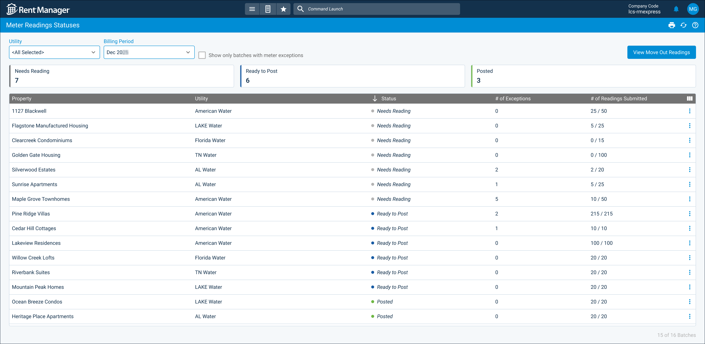

Source: https://rmxhelp.rentmanager.com/Topics/Express/CSH/MU-Meter-Readings-Statuses.htm
Meter Readings Statuses (Page)
If your company requires meter readings to go through an approval workflow, the users responsible for reviewing and approving readings can use the Meter Reading Statuses page to efficiently manage the process. Meter reading statuses indicate the current state of, or actions required for, a batch of meter readings in an approval workflow. Each reading batch may contain exceptions, which are readings in the batch that are flagged as having an unusual consumption amount. The Meter Reading Statuses page displays each batch in a given billing period, allowing you to easily monitor, review, and approve them.
More Information
In order to access the Meter Reading Statuses page, you must be a reviewer or approver for an enabled approval workflow. For more information, refer to Meter Exceptions Approval Workflow.
Related Privileges
| Group | Privilege | Column |
|---|---|---|
| Utilities | Metered utilities | Enabled |
For more information, refer to Control User Access.
To view the Meter Readings Statuses page, go to  arrow_forward Services arrow_forward Metered Utilities arrow_forward Meter Readings Statuses.
arrow_forward Services arrow_forward Metered Utilities arrow_forward Meter Readings Statuses.

To view off-cycle move-out meter readings, click View Move Out Readings at the top right of the page. This option displays only if there is one or more move-out meter readings. For more information, refer to Move Out Readings (Pop-Up).
Filter Options
The following filter options are available:
| Option | Description |
|---|---|
|
Approver |
The user responsible for approving the reading batches. More Information If you are assigned as a reviewer for this approval workflow rather than an approver, this field does not display. |
|
Billing Period |
The month and year for which to display reading batches. To display the past six months as the billing period, select <All>. To display an additional six billing periods in the drop-down list, select Show More. By default, the most recent billing period displays. |
|
Show only batches with meter exceptions |
Limits the batch meter readings to display only those defined as meter exceptions. For more information, refer to Manage Metered Utilities High/Low Settings. |
|
Status |
The different categories describing the current state of or action needed for a reading batch. Select one or more status to filter the results to only batches with the selected statuses. For one-step approval workflows, the available statuses are Needs Reading, Needs Review, Needs Approval, Rejected-Needs Follow Up, Ready To Post, Approved - Ready To Post, and Posted. For two-step approval workflows, Needs Approval is replaced by Needs Conditional Approval and Needs Final Approval. For more information, refer to Meter Exceptions Approval Workflow. More Information If all readings are posted successfully, the status filters do not display. Instead, two graphs display: Properties with Readings Submitted and Properties with Utilities Posted. These each display the number and percentage of readings and postings, respectively, for the billing period. |
Column Descriptions
The following columns are available on this page. By default, some columns display only if added via  .
.
| Default Column | Description |
|---|---|
|
# of Exceptions |
The number of exceptions found in the reading batch. An exception occurs when a reading is flagged as having an unusual consumption amount. |
|
Property |
The property associated with the reading batch. |
|
Reviewer |
The user responsible for reviewing and providing reasons for any exceptions in the batch. |
|
Status |
The current state of the meter batch (e.g., Needs Approval, Approved - Ready to Post, etc.). |
|
Utility |
The name of the utility that is associated with the reading batch. Sub-utilities are indented and listed under their respective source utility. |
| Available Column | Description |
|
# of Readings Submitted |
The ratio of the number of individual units in the property with meter readings over the total number of units in the property for the selected billing period. # of Submitted Readings = # of Units with Meter Readings in Property / Total # of Units in Property |
|
Billing Period |
The month and year that the meter reading is billed for. If you took the current reading between the first and fifteenth of the month, the current month displays. If you took the current reading on the sixteenth of the month or later, the following month displays. |
|
Units |
The total number of units included in the reading batch. |
Row Actions
Depending on the reading batch's status and whether you are a reviewer or approver, selecting  arrow_forward Details displays one of the following pages:
arrow_forward Details displays one of the following pages:
| Status | Description |
|---|---|
|
Approved - Ready to Post |
Opens the Meter Readings page in a new tab with the batch's property and utility selected. Readings can be posted from there. |
|
Needs Approval |
Opens the Meter Exceptions page in a new tab. For reviewers, this page is read-only. Approvers can select an approval status for exceptions. |
|
Needs Conditional Approval |
Opens the Meter Exceptions page in a new tab. For reviewers, this page is read-only. Conditional approvers can select a conditional approval status. Final approvers cannot make changes to this page until conditional approvers add a conditional approval status. More Information This option displays only for two-step approval workflows. |
|
Needs Final Approval |
Opens the Meter Exceptions page in a new tab. For reviewers and conditional approvers, this page is read-only. Final approvers can select a final approval status. More Information This option displays only for two-step approval workflows. |
|
Needs Reading |
Opens the Meter Readings page in a new tab with the batch's property and utility selected. |
|
Needs Review |
Opens the Meter Exceptions page in a new tab. Reviewers can select reasons for each exception. Approvers cannot make changes to this page until reviewers add exception reasons. |
|
Posted |
Opens a report that displays details on the posted reading batch. |
|
Rejected - Needs Follow Up |
Opens the Meter Exceptions page in a new tab. Reviewers and approvers can view information on the rejection and determine the steps needed for a follow up. |